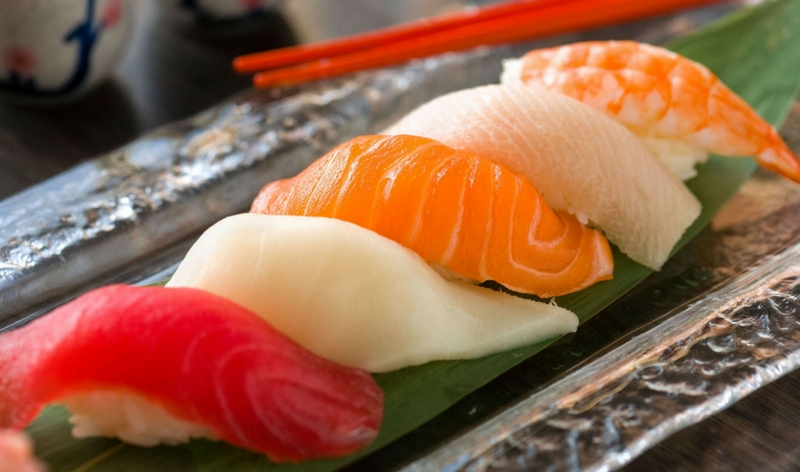
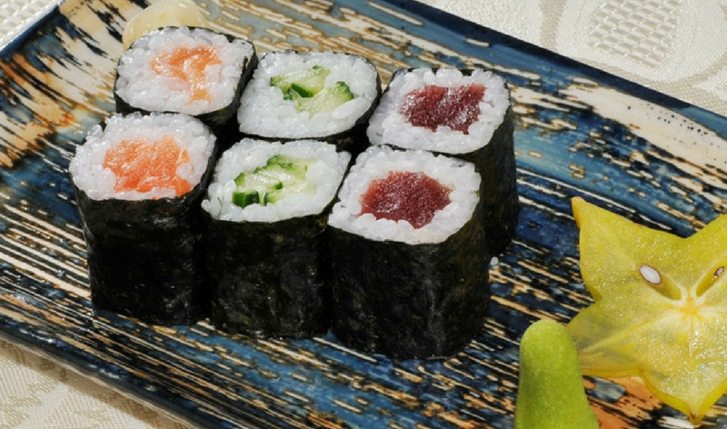
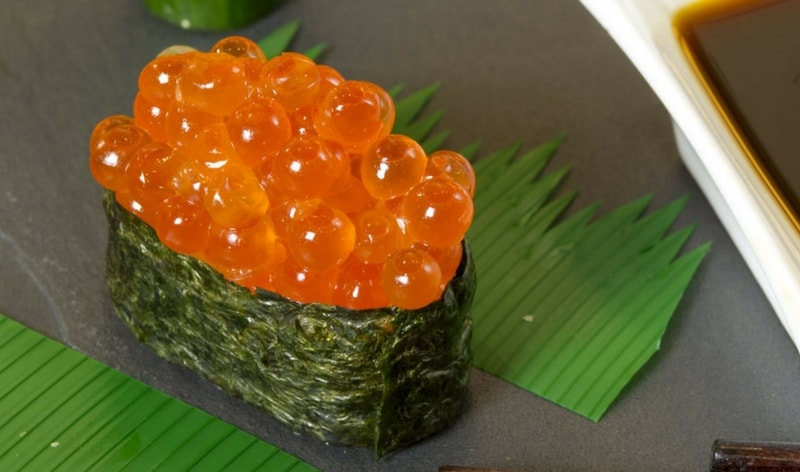
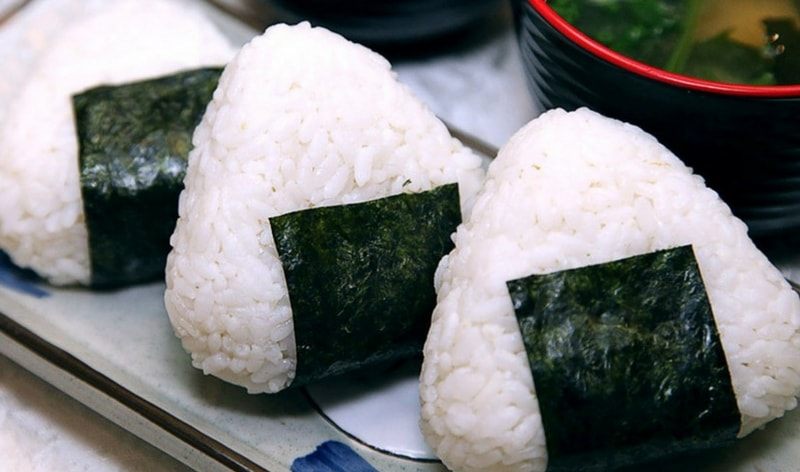
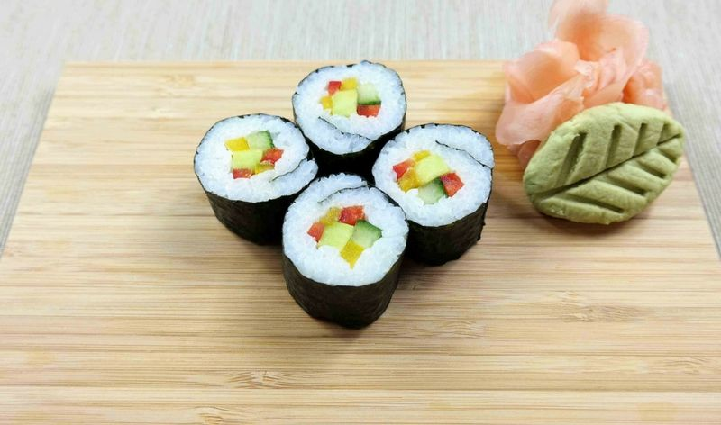

NigiriIl nigiri è uno dei più semplici tra i vari tipi di sushi ed è composto da una pallina ovale di riso modellata a mano e una fettina di pesce sopra. A volte per legare la fettina di pesce al riso viene utilizzata una striscia di alga nori, ma generalmente il nigiri è uno dei pochi tipi di sushi senza alga. Il pesce che compone il nigiri è principalmente: salmone, orata, tonno, anguilla, polpo, seppia, calamaro, granchio, gambero o frittata. |

HosomakiGli hosomaki sono rotolini di riso ripieni di pesce o verdura avvolti in una foglia di alga nori. Gli hosomaki sono molto piccoli, per questo spesso vengono serviti almeno 6 pezzi a persona. Oltre agli hosomaki con pesce esistono anche gli hosomaki vegetariani e vegani con cetriolo, carota o avocado.. |

GunkanIl Gunkan maki è una particolare preparazione del nigiri. La specialità di questo varietà di sushi è che nella sua preparazione vengono utilizzati diversi ingredienti, ad esempio, le uova di pesce, la carne e le minuscole uova di quaglia. |
|---|---|---|
|

OnigiriL’Onigiri è un tipico cibo da strada giapponese che viene consumato passeggiando o come spuntino veloce. È composto da un triangolo di riso con un cuore ripieno principalmente composto da salmone e tonno e da una striscia di alga che ha anche la funziona di “fazzoletto” per non toccare il riso con le mani. |

ChumakiPossiamo dire che il chumaki è il cugino dell’hosomaki. I chumaki sono dei maki che hanno una dimensione maggiore. Sono composti da: alga nori all’esterno, riso e 2-3 ingredienti all’interno tra pesce, avocado e vegetali. |